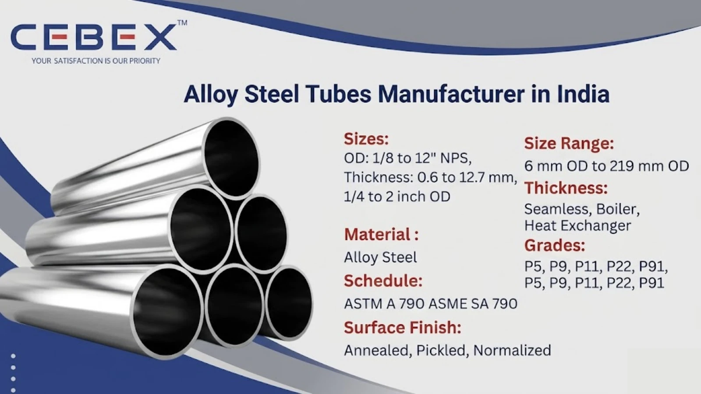

Leading Manufacturer & Exporter of Alloy Steel Tubes
In high-temperature and high-pressure industrial environments, material performance is critical to ensuring system reliability and safety. As a leading Alloy Steel Tubes Manufacturer in India, CEBEX STEEL INDIA supplies premium-quality alloy steel tubes designed for superior strength, heat resistance, and long-term durability.
Alloy steel tubes are engineered with specific alloying elements such as chromium, molybdenum, and vanadium to enhance mechanical properties and resistance to oxidation, creep, and corrosion. These tubes are widely used in boilers, heat exchangers, power plants, refineries, and petrochemical industries where extreme operating conditions are present.
With advanced production capabilities and strict quality control, we deliver alloy steel tubes that meet international standards and perform consistently in demanding applications.

Selecting a reliable supplier for alloy steel tubes is essential for ensuring safety, efficiency, and long-term operational performance. CEBEX STEEL INDIA is recognized for strong manufacturing capabilities, technical expertise, and global export reach.
We manufacture alloy steel tubes in compliance with ASTM A213, ASTM A335, ASTM A179, and ASME SA213 standards. Each tube undergoes comprehensive testing including PMI, ultrasonic testing, hydrostatic testing, eddy current testing, and full mechanical testing.
We maintain complete traceability from raw material to finished product with heat numbers and batch records. All products are supplied with EN 10204 3.1 / 3.2 Mill Test Certificates along with inspection reports and compliance documentation.
Our alloy steel tubes are manufactured using high-quality raw materials and advanced processing techniques to ensure superior performance.
| Feature | Specification / Detail |
|---|---|
| Product Type | Alloy Steel Tubes |
| Standards | ASTM A213, A335, A179, ASME SA213 |
| Grades | P5, P9, P11, P22, P91 |
| Tube Types | Seamless, Boiler Tubes, Heat Exchanger Tubes |
| Size Range | 6 mm OD to 219 mm OD |
| Thickness | 1 mm to 25 mm |
| Surface Finish | Annealed, Pickled, Normalized |
| Key Properties | High temperature resistance, excellent strength, creep resistance |
Alloy steel tubes are designed for high-performance applications requiring durability under thermal and mechanical stress.
We manufacture a wide range of alloy steel tubes suitable for various industrial applications. Seamless alloy steel tubes are preferred for high-pressure and high-temperature environments due to their uniform structure and superior strength. Boiler tubes are specifically designed for heat transfer and pressure applications in power plants.
We also supply heat exchanger tubes and customized alloy steel tubes with precise tolerances, wall thickness, and finishes as per project requirements.
Alloy steel tubes are available in multiple grades engineered for specific high-temperature and high-pressure industrial applications.
| Grade | Description | Applications |
|---|---|---|
| P5 | Chromium alloy steel | High-temperature service, refineries |
| P9 | Chromium-molybdenum steel | Power plants, boilers |
| P11 | Low alloy steel | Heat exchangers, piping systems |
| P22 | Cr-Mo alloy steel | Boilers, pressure vessels |
| P91 | High-performance alloy | Power plants, superheaters |
| Category | Standards |
|---|---|
| Tube Standards | ASTM A213, ASTM A335 |
| ASME Standards | ASME SA213, SA335 |
| International Standards | EN, DIN, ISO |
Alloy steel tubes offer excellent mechanical strength and outstanding resistance to high temperatures and corrosive environments.
| Grade | Cr (%) | Mo (%) | Other Elements |
|---|---|---|---|
| P5 | 4.0–6.0 | 0.45–0.65 | Mn, Si |
| P9 | 8.0–10.0 | 0.9–1.1 | Mn, Si |
| P11 | 1.0–1.5 | 0.44–0.65 | Mn, Si |
| P22 | 2.0–2.5 | 0.9–1.1 | Mn, Si |
| P91 | 8.0–9.5 | 0.85–1.05 | V, Nb, N |
| Grade | Tensile Strength (MPa) | Yield Strength (MPa) | Elongation (%) |
|---|---|---|---|
| P5 | ≥ 415 | ≥ 205 | ≥ 30 |
| P9 | ≥ 585 | ≥ 415 | ≥ 20 |
| P11 | ≥ 415 | ≥ 205 | ≥ 30 |
| P22 | ≥ 415 | ≥ 205 | ≥ 30 |
| P91 | ≥ 585 | ≥ 415 | ≥ 20 |
These properties ensure excellent performance under high temperature and pressure conditions.
We manufacture alloy steel tubes in a wide range of sizes suitable for industrial applications.
| OD (mm) | Thickness (mm) | Weight (kg/m) |
|---|---|---|
| 19.05 | 2.11 | 0.89 |
| 25.4 | 2.77 | 1.68 |
| 38.1 | 3.05 | 2.87 |
| 50.8 | 3.68 | 4.52 |
| 76.2 | 5.16 | 9.10 |
Custom sizes, tolerances, and specifications are available as per project requirements.
Alloy steel tubes are widely used in industries requiring high strength and resistance to extreme temperatures. These include power generation plants, boilers, heat exchangers, refineries, petrochemical plants, oil & gas industries, and pressure vessel manufacturing.
Their ability to withstand high thermal stress makes them ideal for superheaters, condensers, and high-pressure piping systems.
All alloy steel tubes undergo strict quality control and testing procedures including PMI verification, ultrasonic testing, hydrostatic testing, eddy current testing, and complete mechanical testing.
Each tube is supplied with EN 10204 3.1 / 3.2 certification, ensuring full traceability and compliance with international standards.
We use export-grade packaging including wooden boxes, bundles, and protective wrapping to ensure safe transportation. Each tube is properly marked with grade, size, and heat number.
We provide complete export documentation including invoices, packing lists, test certificates, and certificates of origin for smooth global delivery.
As a leading Alloy Steel Tubes Manufacturer in India, we supply high-quality tubes to major industrial projects across Africa. Our tubes are widely used in Nigeria, Egypt, Kenya, South Africa, Ethiopia, and other regions across power, oil & gas, and infrastructure sectors. Visit our Africa Alloy Steel Tubes Exporter page.
We offer a comprehensive range of high-performance industrial tubes designed to meet diverse application requirements across industries.
| Tube Type | Description |
|---|---|
| SS Tube | General-purpose stainless steel tubes for industrial applications |
| Duplex 2205 Tube | High-strength duplex tubes with superior corrosion resistance |
| Super Duplex Tube | Tubes for extreme corrosive environments |
| Nickel Alloy Tube | High-temperature resistant alloy tubes |
| Inconel Tube | Heat-resistant tubes for critical applications |
| Monel Tube | Nickel-copper alloy tubes for marine use |
| Hastelloy Tube | Advanced corrosion-resistant tubes |
| Titanium Tube | Lightweight, high-strength tubes |
| Copper Tube | High conductivity tubes for HVAC systems |
| Carbon Steel Tube | Structural and pressure applications |
| 254 SMO Tubes | Super austenitic tubes for aggressive environments |
Our clients choose CEBEX STEEL INDIA for our technical expertise, commitment to quality, and responsive service. We offer direct-from-manufacturer pricing, flexible order quantities, and comprehensive after-sales support. Our engineering team is available to assist with material selection, specification review, and custom design, ensuring that you receive the optimal solution for your application.
Alloy steel tubes are used in high-temperature and high-pressure applications such as boilers, heat exchangers, power plants, and petrochemical industries.
P11 and P22 are chromium-molybdenum steels used for moderate high-temperature applications, while P91 offers higher strength and creep resistance for advanced power plant systems.
Yes, alloy steel tubes are specifically designed to withstand high temperatures, thermal stress, and oxidation.
They are manufactured according to ASTM A213, ASTM A335, ASME SA213, and international standards such as EN and DIN.
Yes, all tubes are supplied with EN 10204 3.1 / 3.2 Mill Test Certificates along with PMI, NDT, and inspection reports.